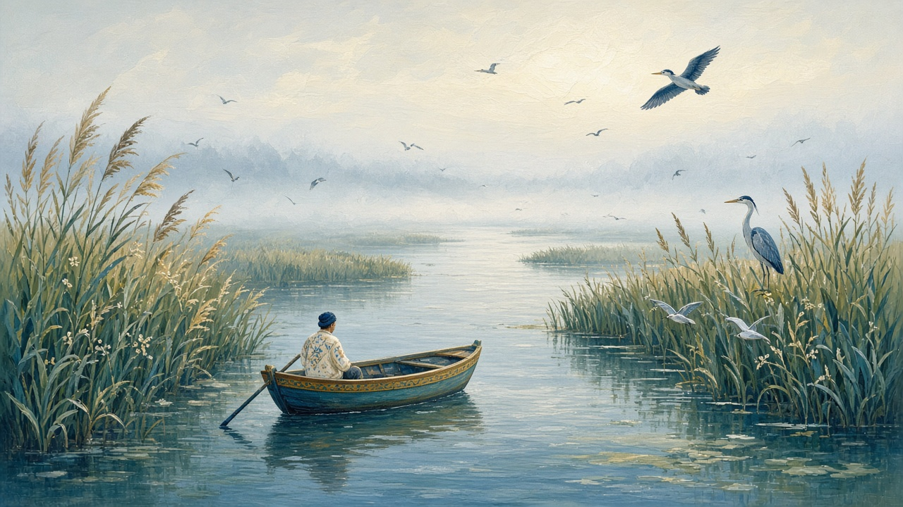
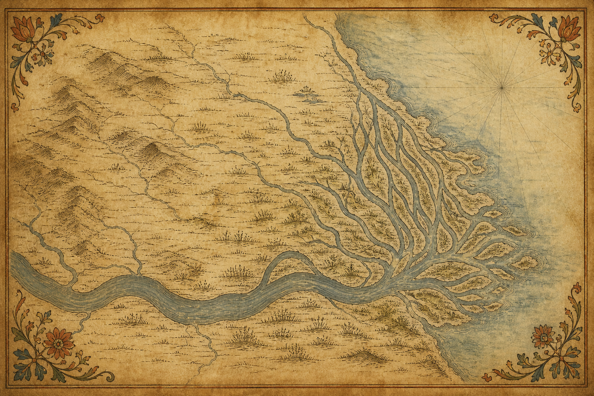
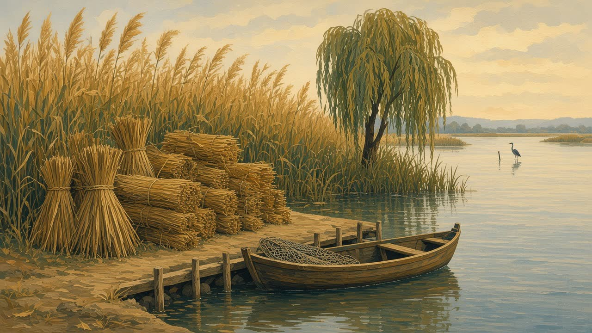

The delta
Delta Dunării. Not the barge river. The last branching before the Black Sea — reeds, channels, a house with one foot in the water.


The last branching
The Danube holds the south of the country for a long stretch, then it stops being one river. It splits. Arms, canals, lakes that look like land until you try to walk them. People say Delta Dunării when they mean that maze, not the industrial water that passes Galați, not the tourist stretch near the Iron Gates. Those are still Dunărea. This is the place where the river becomes a country of its own: stuf, the reed, higher than a person; a boat that is the road; willows standing in water. The rivers page keeps the names of the water that cuts the rest of the country. This page is only the fan at the end.
Living on the water
A lot of yards here are not yards. The house sits on stilts, or on a bank that floods, and the fence is a plank walk. You go by boat — slow, because the channel is the street, and there is no hurry a motor can fix if the water is low. Fishing is still work, not a postcard: nets, a catch that goes to a pot the same day, ice if you can get it. Stuf is cut for roofs, fences, mats, a little cash. In some villages the old fishing houses belong to Lipovan families — Old Believers who came here generations ago and stayed because the water paid. This is not a census. It is the ordinary fact of a place where the boat is how you fetch bread. The villages page still uses the word sat; in the Delta the sat sits on water.
Birds, and the quiet
What visitors come to see, and what you cannot help seeing, are birds. Pelicans, pelicani, heavy on the air. A heron still as a stake. The reeds hold the rest, and the country has decided this is a place to leave mostly alone — a reservation, a park, a set of rules about engines and nets that people argue with and also live under. The animals of the whole country sit on wildlife. This page only needs the feel: a channel that goes quiet after a bend, a sandbar with birds on it, the sense that the land is mostly water pretending. You do not list them. You wait, and they are already there.
Autumn on the water
By late October the hired boats have thinned. Tulcea still sells the ride. Past it, a channel can keep the whole afternoon to itself. The pelicani that sat heavy on a sandbar in summer are fewer, and some mornings the bar is only sand. The white stork of a plains chimney left before this month — late summer or early autumn, the leaving already kept on storks. What you still meet is a heron, a cormorant with its wings held open on a willow, ducks that treat the cold as ordinary. The reeds lose the green and go a dry gold. Wind in them is the loudest thing on the water. The animals of the wider country stay on wildlife. This is only the fan when the season turns.
Fish that is not for tonight is put up. Pește afumat, smoked where the air can reach it, or packed in salt so the cold months are more than one pot. Inland, those weeks are jars and a woodpile — that yard is on winter — and the turn of the calendar is autumn on the year. Here the question is smaller: whether the house still has fish that can wait.

Cutting the stuf
Stuf is not only the wall you pass in a boat. When the stems have dried, and the water has dropped or taken enough ice to stand on, people go into the beds and cut. The bundles come out as snopi, tied, and they are stacked on a bank a boat can still reach. Dry, bristling, the same gold as the reeds left standing. A roof in this water still knows the plant. Acoperiș de stuf is the thatch. The same reed makes a fence, or a mat under a pot. Some of the stacks leave as a load. The cut belongs to the cold. In July the beds are a green wall. In the winter they are a job.
The inland pile in these months is wood against a wall. That stack is on winter. This one is reed, and it waits in the weather until a roof or a buyer comes for it. The sat on that bank is on villages. You do not need a count of the bundles. You need the habit of noticing whether the gold on the bank was cut there.
The lotcă
The road is still a boat. The old shape is a lotcă: narrow, wooden, flat enough for water that is not a river. You pole it where the channel is shallow, or you row, or a small motor takes the long arm when the depth allows. A net in the bow is the job, not a decoration. At dusk the lotcă comes back to the plank walk. What is in it is supper, or it is smoke for the next week. A house that still fishes does not send someone to the shop for that meal.
The pot has a plain name. Ciorbă de pește, or borș de pește when the sour is borș, the sharp liquid a kitchen already keeps. Storceag is the fuller bowl — more than one kind of fish, if the day gave it, and bread after. It is the catch. It is not a menu. Fish laid on ice by the open salt is a different counter, on the sea. This bowl stays in the reeds. You do not need the names of the fish. You need the habit of asking whether the lotcă came back, and whether the pot was waiting.
Tulcea, then salt
Tulcea is the gate. That is where the road mostly ends and the water starts to matter. People buy a ticket, sit on a boat, and call it a day in the Delta. Sulina is the town at the mouth: a straight canal, a cemetery of names from when this was an international port, and a street that still feels like the last street before salt. Living here is another calendar — winter when the channels empty of guests, summer when every hull seems hired. That is not la mare. La mare is Mamaia, a plajă, a week in a rented room — the sea. The Delta is reeds first, salt last. Where the water finally meets the Black Sea, the story can leave. Until then it is still the river, only lost in its own branches. The city at the open window is the short lesson on Constanța.
You do not need a list of channels. You need the habit of asking whether a story is standing on a barge river, in the reeds, or already at the mare — and if it is the reeds, whether it is a day from Tulcea, a house that waits for the lotcă, or a bank of cut stuf.